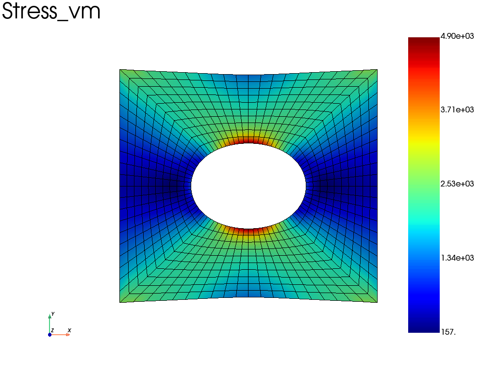

Simple examples
Plate with hole in tension
import fedoo as fd
fd.ModelingSpace("2Dstress")
#Generate a simple structured mesh "Domain" (plate with a hole).
mesh = fd.mesh.hole_plate_mesh(nx=11, ny=11, length=100, height=100, radius=20, \
elm_type = 'quad4', sym=False, name ="Domain")
#Define an elastic isotropic material with E = 2e5MPa et nu = 0.3 (steel)
fd.constitutivelaw.ElasticIsotrop(2e5, 0.3, name = 'ElasticLaw')
#Create the weak formulation of the mechanical equilibrium equation
fd.weakform.StressEquilibrium("ElasticLaw", name = "WeakForm")
#Create a global assembly
fd.Assembly.create("WeakForm", "Domain", name="Assembly", mesh_change = True)
#Define a new static problem
pb = fd.problem.Linear("Assembly")
#Definition of the set of nodes for boundary conditions
left = mesh.find_nodes('X',mesh.bounding_box.xmin)
right = mesh.find_nodes('X',mesh.bounding_box.xmax)
#Boundary conditions
pb.bc.add('Dirichlet', left, 'Disp', 0 )
#symetry condition on bottom edge (ux = 0)
pb.bc.add('Dirichlet', right, 'DispY', 0 )
#displacement on right (ux=0.1mm)
pb.bc.add('Dirichlet', right, 'DispX', 1 )
pb.apply_boundary_conditions()
#Solve problem
pb.solve()
#extract the results from the Assembly object
results = pb.get_results("Assembly", ["Stress", "Disp", "Strain"])
#Plot the von-mises stress (averaged at nodes) on a deformed mesh with a scale factor = 10
results.plot("Stress", "Node", component="vm", scale=10)
